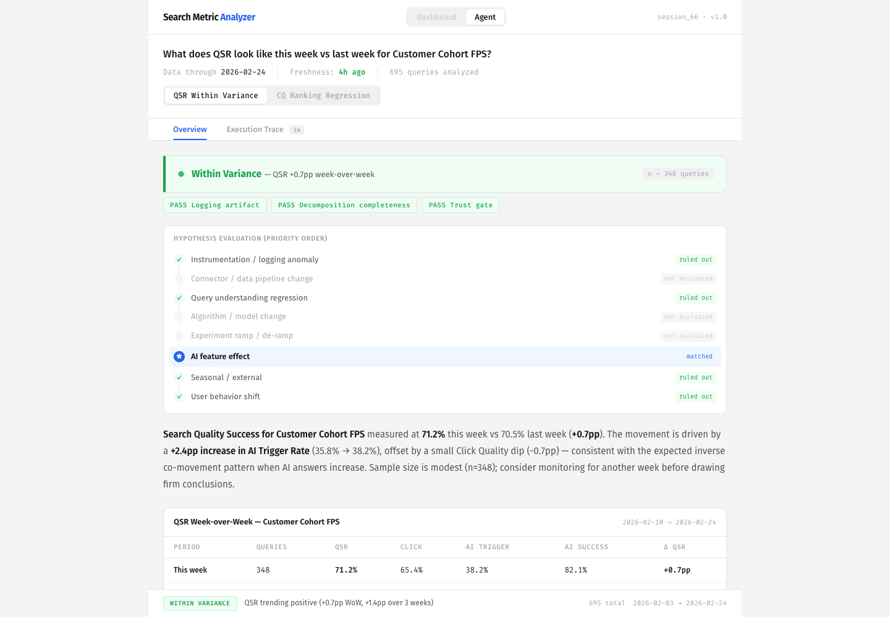
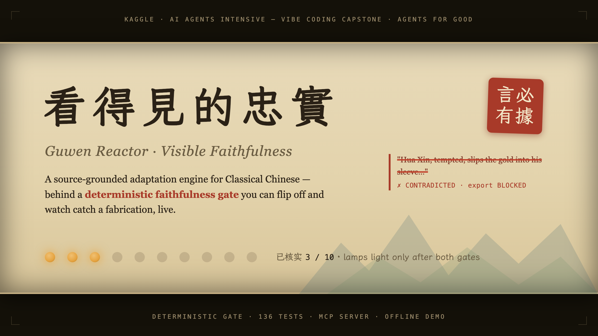
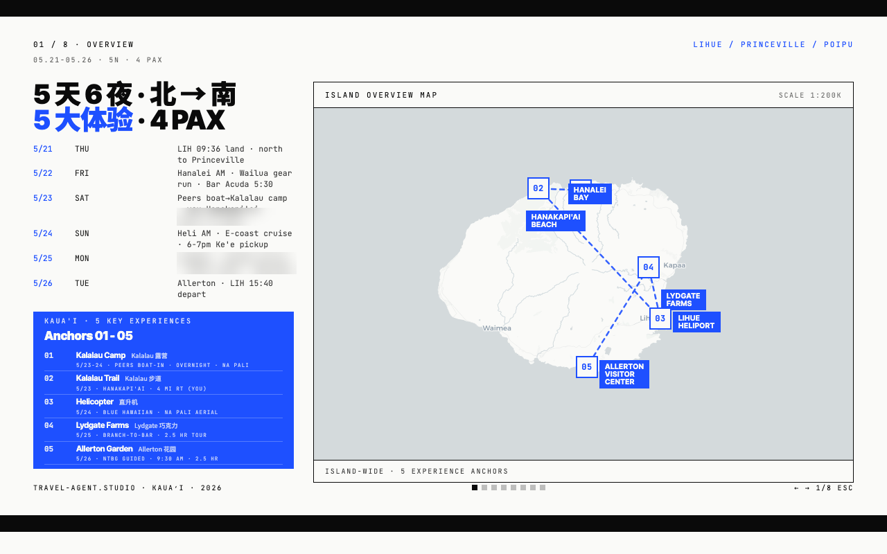
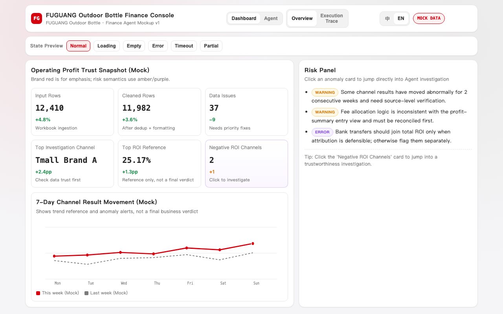

I work on search relevance at Atlassian — ranking, query understanding,
and the metrics that decide what ships. These days I build most things by
directing AI agents: they write the drafts, I decide what passes.
Before this, six years at Meta and four at eBay.
What I've actually done, minus the adjectives. Full numbers live in the resume.
01AtlassianSENIOR DS · SEARCH RELEVANCEBuilt an agent that investigates search metric movement end to end; other orgs picked it up without being asked. Also rebuilt our success metric at the session level — query-level counting had been marking user retries as failures.2025—NOW
02MetaDS → SENIOR · SEARCH / ADS / INFRASearch, Ads, and infra reliability. The two I'd defend hardest: closing content-search quality gaps the topline dashboards couldn't explain, and an LLM prototype that classified severe outages before they spread.2019—2025
03eBaySENIOR DS · PAID MARKETINGPaid marketing analytics — figuring out which ad spend actually earned its keep, and moving the budget that didn't.2015—2019
造 BUILD — IN PUBLIC
Build
Side projects, built by directing AI agents. Each one shown as it actually looks, with the test count it has to keep passing to stay listed.

Search Metric Analyzermulti-agent · in-house first, then rebuilt in the open420 tests passingDiagnoses search metric movement: decompose, detect, diagnose, report. A public rebuild of the agent I made at work, so the whole system can be inspected.
live demogithubcase page →LIVE

Guwen Reactorclassical chinese → english · kaggle capstone136 tests passingAdapts Classical Chinese stories into English. A deterministic check compares every output against locked sources and blocks anything invented.
youtubegithubcase page →LIVE

Travel Agenttrip planning · agents + human gatesin daily usePlans real trips end to end — itinerary decks, live condition checks, decision logs. It planned my last two trips.
case page →LIVE
OSS · no UIAI Writing Suiteoss skill suite · claude + codex65 tests passingFlags AI-sounding prose, learns a writer's voice from samples, drafts from a knowledge base.
githubcase page →LIVE

Finance Analysis Workspacebilingual · fastapilive demoTurns spreadsheets into an executive-ready analysis view. Bilingual.
live democase page →DEMO
教 TEACH
Teach
Tutorials and skills I made so other data scientists can work this way too.
Directing subagents for DS workcourse · liveHow to split analysis work across AI subagents without losing rigor.LIVE
Packaging judgment into skillscourse · liveTurning repeatable analytical judgment into testable, reusable skills.LIVE
DS Productivity Agentsplugin system · open sourceRepeatable data science review, domain guidance, and evaluation, packaged as workflows that can be tested and improved.
githubLIVE
写 WRITING
Notes
Occasional notes on evals and search measurement. The first two are in progress.
When query-level metrics mark retries as failuresmeasurement · session-level metricsWhat our search metrics missed for two quarters, and how session-level counting surfaced it.DRAFTING
How I decide an AI-built system is doneevals · agent directionThe checks I run before anything an agent wrote is allowed to ship.OUTLINE
GET IN TOUCH / 联系
Let's talk.
About search, evals, or building something together. · ● open to Search & Ranking roles